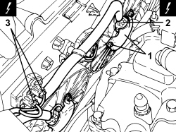
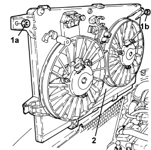
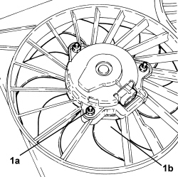
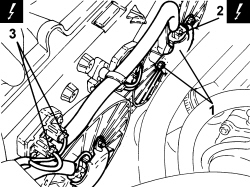
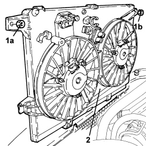

1088E11 FANS WITH SINGLE ENGINE DUCT - R+R
- Path
- Procedures > 10 ENGINE > 1088 ENGINE COOLING > 1088E COOLANT TEMPERATURE CONTROL DEVICES > 1088E11 FANS WITH SINGLE ENGINE DUCT - R+R
- Kind
- repair procedure (removal / refitting; the operation number is the code)
- Applies to
- engines: 3.2 JTS, 2.4 JTD 20V; all production periods
- Interactive page
- https://sloeber94.github.io/elrnDB/alfa/159/en/#/939005295
Applies to: engines: 3.2 JTS; all production periods
 Removing
Removing
 Refitting
RefittingOp. 1016A10 SOUND-PROOFING COVER - R.R
Op. 5530B52 BATTERY SUPPORT/DRIP TRAY - R.R
1. Undo the nuts and remove the heat shields for the fan motors.
2. Disconnect the fan electrical connections.
Description | Connector | |
|---|---|---|
2 | Engine fan motor -1 |
Description | Connector | |
|---|---|---|
2 | Engine fan motor -2 |
3. Disconnect the electrical connections for the dimmers.
Description | Connector | |
|---|---|---|
3 | Engine fan adjustment resistance - 1 |
Description | Connector | |
|---|---|---|
3 | Engine fan adjustment resistance -2 |

Applies to: engines: 3.2 JTS; all production periods
1. Undo nuts (1a) and (1b) securing the fans to the radiator.
2. Remove the fans from their housings.

Applies to: engines: 3.2 JTS; all production periods
If necessary:
1. Undo the nuts (1a) and remove the fan motor (1b).

Applies to: engines: 3.2 JTS; all production periods
Refitting
Removing- Place the fan motor back in its housing and fasten it using the nuts.
- Place the fans in their housings.
- Tighten the nuts securing the fans to the radiator.
- Connect the electrical connections for the dimmers.
- Connect the electrical connections for the fans.
- Place the fan motor heat shields in their housings and secure them using the nuts.
Applies to: engines: 2.4 JTD 20V; all production periods
Removing
RefittingOp. 1016A10 SOUND-PROOFING COVER - R.R
Op. 5530B52 BATTERY SUPPORT/DRIP TRAY - R.R
1. Undo the nuts and remove the heat shields for the fan motors.
2. Detach the fan electrical connections.
Description | Connector | |
|---|---|---|
2 | Engine fan motor - 1 |
Description | Connector | |
|---|---|---|
2 | Engine fan motor - 2 |
3. Detach the electrical connections for the dimmers.
Description | Connector | |
|---|---|---|
3 | Engine fan adjustment resistance - 1 |
Description | Connector | |
|---|---|---|
3 | Engine fan adjustment resistance - 2 |

Applies to: engines: 2.4 JTD 20V; all production periods
1. Undo nuts (1a) and (1b) securing the fans to the radiator.
2. Remove the fans from their housings.

Applies to: engines: 2.4 JTD 20V; all production periods
If necessary:
1. Undo nuts (1a) and remove fan motor (1b).
Applies to: engines: 2.4 JTD 20V; all production periods
Refitting
Removing- Place the fan motor back in its housing and fasten it using the nuts.
- Place the fans in their housings.
- Tighten the nuts securing the fans to the radiator.
- Secure the electrical connections for the dimmers.
- Secure the electrical connections for the fans.
- Place the fan motor heat shields in their housings and secure them using the nuts.
Topics linked from this page (7)
- 1016A10 SOUND-PROOFING COVER - R.R
- 5530B10 BATTERY - R+R
- 5530B52 BATTERY SUPPORT/DRIP TRAY - R.R
- N011 FAN MOTOR
- N012 ENGINE FAN MOTOR - 2
- O010 ENGINE FAN ADJUSTMENT RESISTANCE - 1
- O012 ENGINE FAN 2 ADJUSTMENT RESISTANCE